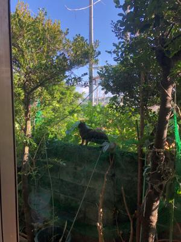
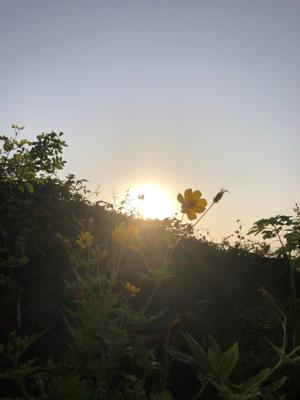

うるがいの話 ある日
最新: メインフレーム【うるがいの話 ある日】とは 一日だけのプログです
『うるがいの話』の最新一日だけのプログで、通信料が少なく経済的だ。カニの画像をクリックすると全ての日付が載る『うるがいの話』サイトを表示します
|
|
【うるがいの話】 うるがい(ｳﾙｶﾞｲ urugai)とは、『もずくがに』の名前でとても大きくなります。 |
|---|---|
|
|
【カミマヤーの話】 猫のことを方言でマヤーといいます。カミマヤー（kamimayaa）とは、神の猫のことです。 |
|
【たながぁの音楽】 たながぁ（ﾀﾅｶﾞｰtanagaa）とは手長えびのことで、何種類かあり大きいのは車 エビぐらいになります。 |

|
【ぶながぁの話】 ぶながー(bunagaa)とは、赤い髪の毛、赤い身体、そして身長は１ｍ２０ｃｍ ぐらい、川の蟹を食べているの目撃された。場所は沖縄県国頭郡大宜味村のと ある村僕の隣近所に住んでいる爺さんから、聞いた話です。 |
|
|
【ギーマの話】 ギーマ(giima)とは、山原の里山に咲くスズランに似た、 花を付けます。実は食べられます、 気が付くと口の周りが紫になっています。 |
2022年03月08日 (火）メインフレーム
17:00

仕事の応援のため前の職場にいる、徹夜になりやがて明け方が近づく、フと退
職した人が、ここにいるとヤバイ！と気付き慌てふためき・・、目が覚めた。
日本のコンピューター史に、また1つピリオドが増える。富士通がメインフレー
ムとUNIXサーバーの事業からの撤退を決めた。

日経のメルマガから、飛び込んできた。そも昔、富士通の製造部署の課長さん
が『富士通は永久にメインフレームをサポートします！』と宣言していた、な
んと頼もしいとその時は感嘆したが。世の中がどんどん変わっていくのを経験
しているので驚きもないが。Ⅾ✕人材の講師曰く、これまでの商売の仕方では
売れないと、それにしても寂しい。ヨメのお母さんは明日退院することになっ
た、ただし、家に戻るのではなくリハビリのため豊見城中央病院へ移転する。
１６時５６分 ビットコインの総資産 ￥１２、８６３↑